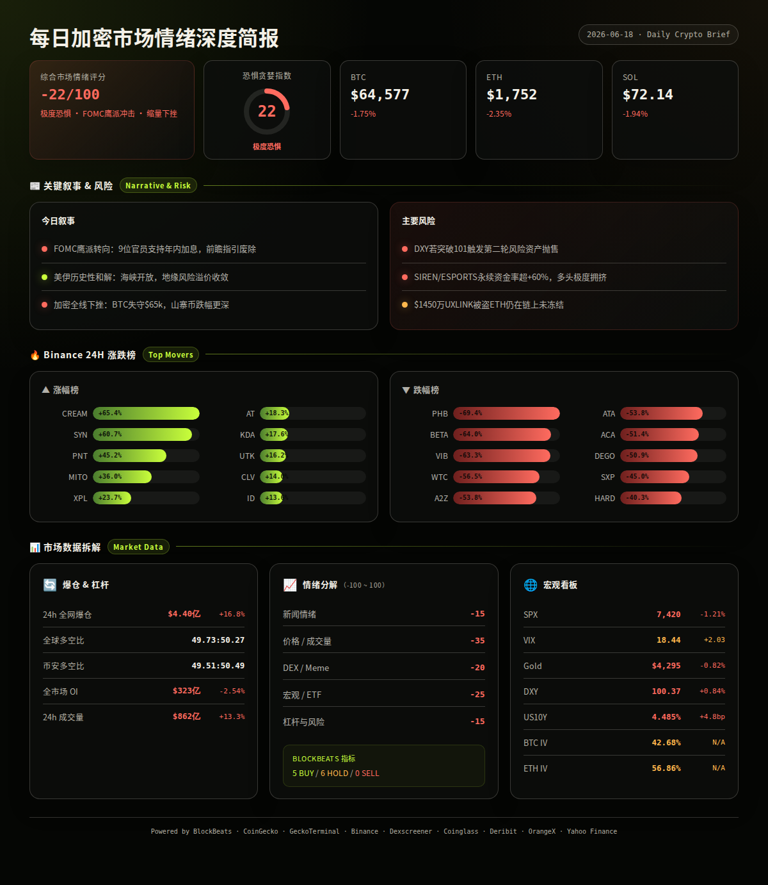
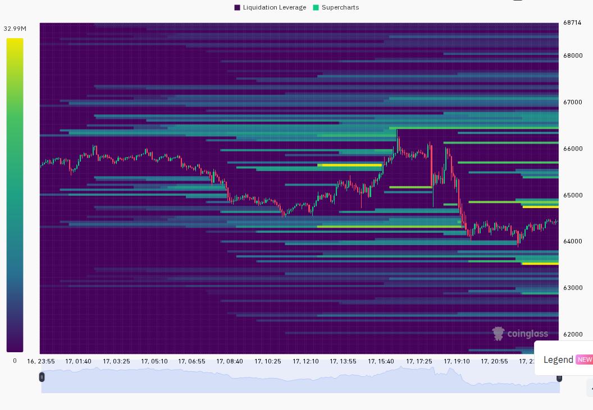
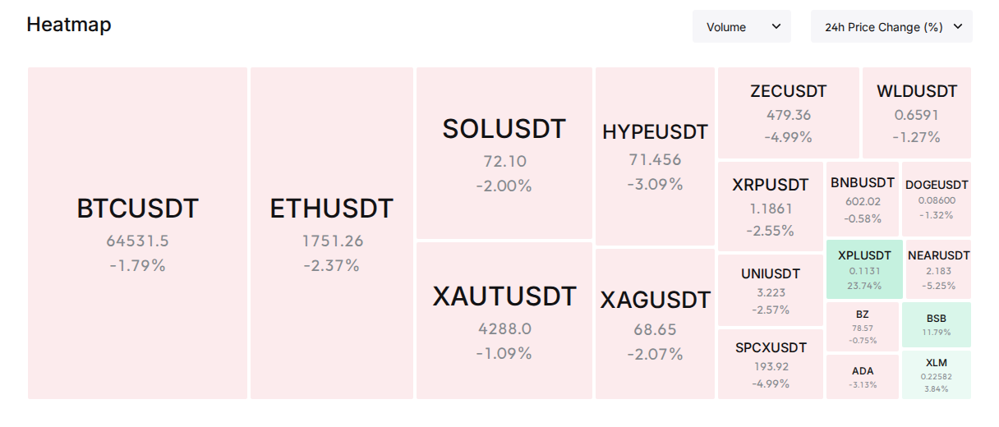

**报告已生成！** 以下是今日(6月18日)完整深度报告：
=== 第一段：叙事与风险面 ===
鲍威尔FOMC首秀虽按兵不动，但点阵图鹰派转向——9位官员支持年内加息，市场全面定价25bp加息预期。加密市场全线下挫，BTC跌破$65,000支撑，F&G降至极度恐惧22。唯一亮点：SYN/CREAM等少数山寨币逆势暴涨，但流动性极薄，非趋势反转信号。(BlockBeats, CoinGecko, multi-source)
24h变化: 情绪 -5(较前日估算) | BTC ↘1.75% | ETH ↘2.35% | SOL ↘1.94% | VIX 18.44(正常偏高) | DXY ↗0.84% | 成交量 ↗13.34% (multi-source)
BTC / ETH / SOL
注: 本日X/Twitter KOL信号数据不可用，X信号交叉验证跳过。
信息 1: BTC在FOMC决议前短暂跌破$64,000，鲍威尔讲话后反弹至$64,577但仍处下降通道。24h高$66,446低$63,916，振幅3.9%，成交量$12.4亿。期货溢价全面转负(BTC -0.031%, ETH -0.039%, SOL -0.060%)，暗示短期空头主导。(Binance, CoinGecko)
信息 2: 知名交易员Technorevenant仍持有8000万枚XPL，持仓8个月未动，未实现亏损收窄至$8660万。Plasma One上线消息推动XPL 24h涨超23%。(BlockBeats)
ETF / 宏观 / 监管
信息 3: 美联储维持利率3.50%-3.75%不变(连续第四次)，但政策声明大幅鹰派改写——删除"进一步调整利率"措辞、放弃前瞻指引。点阵图显示9/19位官员预计2026年内加息，1位支持加息3次。市场现已完全定价年底前25bp加息。(BlockBeats)
信息 4: 鲍威尔记者会三大看点：①通胀远高于2%目标，近期历史警示不宜过早降息；②正式放弃前瞻指引，不再提供下一步利率行动信号；③"希望市场基于经济基本面定价，而非美联储解读"。美股先涨后跌，SPX收7420点(-1.21%)。(BlockBeats)
信息 5: 特朗普宣布美国与伊朗达成历史性谅解备忘录，海峡即将全面开放。伊朗将在60天内履行协议，否则恢复轰炸。巴基斯坦总理确认两国总统已电子签署。WTI原油应声下跌。(BlockBeats)
信息 6: BTC ETF近期资金流偏弱：6/16净流入$1020万、6/15净流出$6480万、6/12净流入$8590万。整体呈小幅波动，无持续方向性信号。累计净流入约$1306亿。(BlockBeats)
信息 7: DXY 24h上涨0.84%至100.37，受鹰派FOMC推动快速走强。US10Y收益率24h升4.8bp至4.485%，但7d累计仍降9.1bp。强美元对风险资产形成压力。(BlockBeats)
DeFi / 安全事件
信息 8: UXLINK遭攻击，攻击者已将约1460万DAI兑换为8298.6枚ETH（价值约$1450万）。PeckShield监控显示攻击者随后通过跨链桥转移资金，这是本周最大安全事件。(BlockBeats)
Meme / 小市值代币
信息 9: Coinbase宣布上线Re(RE)现货交易，同日Coinbase Ventures宣布战略投资Re（去中心化再保险协议）。Binance Alpha上线O1交易所代币O，用户需225积分即可领取200枚O空投。(BlockBeats)
信息 10: SIREN进入CoinGecko热搜#4，Binance永续合约上SIREN资金费率高达+57%-60%（极度看多拥挤）。但DEX流动性仅$9534万，深度有限，警告高度投机风险。(CoinGecko, Dexscreener)
预测市场 / Polymarket
信息 11: 预测市场热度集中在世界杯赛事：Predict.fun"葡萄牙vs刚果民主共和国"葡萄牙胜率77%；"西班牙vs佛得角"西班牙胜率约97%。Kalshi开发AI代理工具用于压力测试预测市场交易风险。(BlockBeats)
融资 / VC
信息 12: 本周融资亮点：①EarnOS完成$600万Pre-A轮(1kx领投，Coinbase Ventures参投)；②Trace Finance完成$3200万A轮(CoinFund领投)；③Re获Coinbase Ventures战略投资；④能源公司TAR完成$2700万种子轮解决AI数据中心电力问题。(BlockBeats)
板块轮动 (CoinGecko分类)
信息 13: 24h板块最强：bStocks生态系统(+141.8%)、ERC 404(+58.0%)、Echo Launchpad(+37.3%)——均为极小市值板块，受个别代币暴涨驱动，非板块性轮动。最弱：DN-404(-100%，异常数据)、Christmas主题(-74.6%)、Printr Launchpad(-72.7%)、Arcade Games(-53.4%)、Telegram Apps(-39.9%)、代币化BTC(-34.0%)。(CoinGecko)
Binance 涨跌榜 (USDT交易对)
信息 14: 24h涨幅最强：CREAM(+65.4%)、SYN(+60.7%)、PNT(+45.2%)、MITO(+36.0%)、XPL(+23.7%)、AT(+18.3%)、KDA(+17.6%)、UTK(+16.2%)、CLV(+14.0%)、ID(+13.6%)。跌幅最深：PHB(-69.4%)、BETA(-64.0%)、VIB(-63.3%)、WTC(-56.5%)、A2Z(-53.8%)、ATA(-53.8%)、ACA(-51.4%)、DEGO(-50.9%)、SXP(-45.0%)、HARD(-40.3%)。跌幅榜多为小市值代币，疑似流动性退出或单一做市商撤出。(Binance)
风险 1: FOMC鹰派余震——利率预期剧烈上修，若市场继续消化加息前景，BTC可能测试$62,000支撑。→ 观察: 若BTC守住$63,900低点且成交量萎缩则企稳；失效条件: 若放量跌破$63,000则看$60,500。(BlockBeats, analysis)
风险 2: DXY持续走强——美元指数24h涨0.84%至100.37，若突破100.50可能触发更大规模风险资产抛售。→ 观察: 若DXY回落至100以下则风险偏好回升；失效条件: 若DXY突破101则加密面临第二波下跌。(BlockBeats, analysis)
风险 3: 高杠杆清算连锁——24h清算$4.4亿(+16.82%)，空头虽略占优(50.27%)但溢价转负显示期货市场信心脆弱。→ 观察: 若多头清算占比飙升(>55%)意味着恐慌性抛售；失效条件: 若清算量次日下降>30%表明杠杆已出清。(Coinglass, analysis)
风险 4: SIREN/ESPORTS等小币极端资金费率——SIREN永续资金率+57-60%，ESPORTS+44-60%，多头极度拥挤，反向清算风险极高。→ 观察: 若资金费率反转(由正转负)大概率伴随急跌；失效条件: 若价格继续上涨且OI平稳。(CoinGecko, analysis)
风险 5: UXLINK被盗资金仍在线——$1450万ETH尚未被冻结或追回，攻击者可能继续抛售ETH造成额外卖压。→ 观察: 若链上出现大额ETH转入交易所；失效条件: 若资金被Tether/交易所冻结。(BlockBeats, analysis)
风险 6: 期权到期——Deribit季度合约显示ETH ATM IV 56.86%明显高于BTC 42.68%(价差14.18pp)，ETH期权溢价偏高暗示更多不确定性定价。→ 观察: 若ETH-BTC IV价差收窄至<10pp则风险情绪正常化。(Deribit, analysis)
非财务建议声明: 本报告仅提供市场数据和情绪分析，不构成任何买卖建议。
6月18-19日 — 美伊MOU签署仪式(可能推迟至周五) — 若顺利签署则利好风险资产，缓和地缘溢价 (BlockBeats)
6月18-19日 — 市场消化FOMC鹰派转向，关注美联储官员后续讲话 — 鹰派强化则利空 (analysis)
6月19日 — 周度期权到期(周五) — 通常带来波动率放大，中性偏空 (analysis)
6月20-22日 — G7峰会(AI与地缘议题) — OpenAI/Anthropic/Google高管出席，AI板块可能有催化剂 (BlockBeats)
6月17-24日 — RE Prime Sale进行中(Binance Wallet，单人上限3BNB) — 关注RE上线后市场反应 (BlockBeats)


=== 第二段：数据与技术面 ===
整体评分: -22/100
5维度分解：
新闻情绪: -15/100 — FOMC鹰派转向是压倒性利空叙事，虽有美伊缓和利好但对冲有限。关税/地缘尾部风险降低，但利率上行预期压制风险偏好。(BlockBeats, analysis)
价格/成交量: -35/100 — 三大币种全线下挫(BTC -1.75%, ETH -2.35%, SOL -1.94%)，成交量$862亿(+13.34%，放量下跌不健康)。BTC.D升至56.11%显示山寨币跑输，资金向BTC集中防御。(CoinGecko, Binance, analysis)
DEX/meme 活跃度: -20/100 — GT Solana热门池仅1个($TOESCOIN)超过$100万日成交量，新池48h无合格项目。Meme活跃度处于冰点，MEEP虽然24h涨168倍但流动性仅$6.5万属极端风险。(GeckoTerminal, analysis)
宏观/ETF/流动性: -25/100 — DXY +0.84%，US10Y +4.8bp，SPX -1.21%，VIX +12.37%至18.44，黄金 -0.82%。宏观三杀：强美元、升利率、跌美股，三重压力。ETF流量平淡无方向。(BlockBeats, Yahoo Finance, analysis)
杠杆与风险: -15/100 — 24h清算$4.4亿(+16.82%)，全球LS 49.73:50.27接近均衡但溢价转负，多头信心不足。BTC总OI $323亿(major)、ETH $182亿、SOL $38亿，ETH虽OI较高但KuCoin SOL异常高资金费率(+10.7%)需警惕。(CoinGecko, Coinglass, analysis)
BlockBeats 底部/顶部指标完整列表:
· 整体市场流动性指数: Buy（砸盘成本高，易成底部）
· 比特币流动性指数: Buy（LIQ>3，砸盘成本高）
· 以太坊流动性指数: Hold
· 过去24小时累积比特币流动性指数: Buy（LIQ总和>60）
· 整体市场流动性(以比特币为单位): Hold
· 合约多空比偏离指数: Hold
· 山寨币抗跌指数: Hold
· Bitfinex BTC/USD 溢价: Hold
· USDC/USDT 溢价: Buy（USDC相对USDT溢价，资金入场信号）
· Binance USDT 借贷利率: Buy（利率<10%，倾向于底部）
· 持仓量加权资金费率年化利率: Hold
综合: 5 Buy / 0 Sell / 6 Hold —— BB指标发出温和底部信号，与价格走势形成背离。多数Buy信号来自流动性/借贷层面，表明聪明资金可能已在$64,000附近悄悄吸筹。(BlockBeats)
BTC: $64,577，24h -1.75%，成交量$12.43亿(现货)。24h高$66,446低$63,916，振幅3.9%。1h蜡烛形态：最后3根连续小阳线(低点$63,916→$64,577)，有短期企稳迹象。期货溢价：markPrice $64,550 vs indexPrice $64,570，贴水-0.031%——空头主导但贴水极小。(Binance)
ETH: $1,752，24h -2.35%，成交量$5.91亿(现货)。24h高$1,810低$1,725，跌幅大于BTC，山寨季缺席。最后3根1h蜡烛均为小阳线，从$1,740回升至$1,752。期货溢价：-0.039%，同样空头主导。ETH/BTC汇率走弱。(Binance)
SOL: $72.14，24h -1.94%，成交量$1.78亿(现货)。24h高$74.69低$70.83，表现介于BTC和ETH之间。最后3根1h蜡烛小幅回升。期货溢价：-0.060%，三大币种中贴水最深。(Binance)
全球市场: 总市值$2.30万亿(-1.58%)，24h成交量$861.9亿。BTC市占率56.11%，ETH 9.17%。BTC.D 24h微升约0.3pp，资金向BTC集中防御。(CoinGecko)
衍生品杠杆(CoinGecko，仅主要交易所):
BTC: 64个主要交易所永续合约，OI加权平均资金费率+0.235%。最高: Bitget BTCUSD_DMCBL +1.00%（$3.03亿OI），最低: Bybit BTCUSDT -0.040%（$31.9亿OI，规模最大的负费率）。Hyperliquid BTC-USD: -0.026%（$20.1亿OI）。总OI $323亿。无极端费率异常。(CoinGecko)
ETH: 90个主要交易所永续合约，OI加权平均+0.414%。KuCoin ETHUSDM +2.47%偏多（$4175万OI），Coinbase ETHFI-PERP -4.71%偏空(极小OI可忽略)。总OI $182亿。(CoinGecko)
SOL: 40个主要交易所永续合约，KuCoin SOLUSDCM +10.7%异常偏高（$1197万OI），BitMEX SOLUSD +2.63%（$330万OI）。整体OI加权平均-0.076%，多空接近均衡。总OI $38亿。(CoinGecko)
清算数据(Coinglass): 24h清算$4.40亿(+16.82%较前日)。全球多空比49.73:50.27，空头略占优势但接近均衡。Binance TV多空比49.51:50.49，与全球水平基本一致。清算量以多头为主(价格下跌触发)，符合下跌市特征。(Coinglass)
跨平台OI(BlockBeats, 6/16数据):
· Binance: OI $190.0亿 | 24h成交量 $345.6亿
· Bybit: OI $90.5亿 | 24h成交量 $120.5亿
· Hyperliquid: OI $67.2亿 | 24h成交量 $53.4亿
Binance仍占主导，Hyperliquid OI稳步增长。(BlockBeats)
宏观看板:
· SPX: 7420.10 (-1.21%) — 美股受FOMC鹰派冲击下跌，科技股承压 (Yahoo Finance)
· VIX: 18.44 (+12.37%) — 处于正常区间(15-20)但快速攀升，反映市场焦虑上升 (Yahoo Finance)
· DXY: 100.37 (+0.84% 24h, +0.28% 7d) — 美元在FOMC后走强突破100 (BlockBeats)
· US10Y: 4.485% (+4.8bp 24h, -9.1bp 7d) — 短端利率预期上修推升中端收益率 (BlockBeats)
· Gold: $4,295.40 (-0.82%) — 黄金与BTC同跌，受强美元压制。BTC-黄金短期正相关性(+0.6)维持 (Yahoo Finance)
· BTC与SPX相关性: 维持正相关(~0.7)，宏观驱动明显 (analysis)
期权波动率(Deribit):
· BTC ATM IV: 42.68% — 处于正常区间(40-60%)，未现恐慌溢价。但需注意Deribit显示的BTC基础价格$66,495与现货$64,577存在约3%偏差，可能反映数据延迟或指数构成差异。(Deribit)
· ETH ATM IV: 56.86% — 同样在正常区间但偏高，ETH-BTC IV价差14.18pp接近15%阈值。若突破15pp则确认山寨币投机溢价回归。(Deribit)
· IV vs VIX: BTC IV(42.68%)远高于VIX(18.44)，加密市场内在波动率定价显著高于传统市场。(Deribit, Yahoo Finance)
SYN (Synapse) — 多链: $0.2707, 24h +60.7%, 市值约$2.4亿. DEX: 流动性$6669万, 24h成交量数据有限. 催化剂: Binance现货涨幅榜#2，成交放量，可能受益于跨链叙事回暖. 风险: 单日涨幅超60%属异常波动，Dexscreener交易数据稀疏，警惕回调. (CoinGecko, Binance, Dexscreener)
CREAM (Cream Finance) — 多链: 24h +65.4%(Binance涨幅#1), 市值约$3000万. DEX: 各链流动性分散，主流动性在ETH主网. 催化剂: 无明确新闻驱动，疑似流动性抽干后的空头轧空或做市商调仓. 风险: 极低流动性，无基本面变化支撑，高风险投机. (Binance, analysis)
XPL (Plasma) — Solana: $0.096, 24h +23.7%, 市值约$7700万(基于80亿总供应推算). DEX: 流动性$9614万, 24h成交量极低. 催化剂: Plasma One官方上线消息(原生数字银行App支持稳定币)，知名交易员Technorevenant亏损收窄. 风险: DEX真实成交量极低(仅$4)，价格主要由CEX驱动，警惕流动性错觉. (CoinGecko, Binance, Dexscreener, BlockBeats)
HYPE (Hyperliquid) — Solana/Hyperliquid: $72.81, 24h -1.6%(跟跌大盘). 市值$6240万(Solana). Solana链上净流入#1($267万)，Garret Jin(OG巨鲸)继续加仓，总持仓超$1.08亿. DEX: Solana流动性$15.2亿. 催化剂: 鲸鱼持续积累+Solana链上净流入第一. 风险: 价格已远离ATH $67→$72为6月初反弹高位，短期受大盘拖累. (CoinGecko, BlockBeats, Dexscreener)
SIREN — Solana: $0.1316, 24h +3.4%, CoinGecko热搜#4. DEX: 流动性$9535万. 催化剂: 社区热度高，永续合约资金费率极端偏多(Binance/Bybit/Bitget均+25%~+60%). 风险: 极高资金费率意味着多头拥挤，反向清算风险巨大，非入场时机. (CoinGecko, Dexscreener)
ONYC — Solana: $1.11, 24h约-2%, 市值$1.88亿. DEX: 流动性$75.8万. Solana链上净流入#4($55万). 催化剂: 链上资金持续净流入. 风险: DEX流动性极低($76万)，滑点风险高. (BlockBeats)
ANTFUN — Solana: $0.024, 市值$2.44亿. Solana链上净流入#3($56万). DEX: 流动性$557万. 催化剂: 链上资金关注度高. 风险: 市值$2.4亿但日成交量仅$497万，交投清淡. (BlockBeats)
· GeckoTerminal Solana热门池(Top 3, >$100万24h成交量):
TOESCOIN/SOL: 24h成交量$188万, 价格+3.67%, 买卖比22756:11607(偏买). 流动性$34.6万.
MEEP/SOL: 24h成交量$223万, 价格+168倍(新币), 买卖比17429:12743. ⚠️流动性仅$6.5万，极高风险.
FARM/SOL: 24h成交量$217万, 价格+21倍(新币), 买卖比15338:14746. ⚠️流动性仅$6.8万，极高风险.
(GeckoTerminal)
· GeckoTerminal Solana新池(48h, >$5万流动性+>$10万成交量): 本周期无满足条件的新池。Meme币新发行活跃度处于低谷。(GeckoTerminal)
· BlockBeats Solana链上净流入Top 5:
HYPE: 净流入+$267万 | 市值$6240万 (BlockBeats)
ETH(桥接): 净流入+$58.8万 | 市值$1.46亿 (BlockBeats)
ANTFUN: 净流入+$55.8万 | 市值$2.44亿 (BlockBeats)
ONYC: 净流入+$55.0万 | 市值$1.88亿 (BlockBeats)
PUMP: 净流入+$52.2万 | 市值$5.24亿 (BlockBeats)
基于全部数据源综合分析，未来24-48小时三种最可能情景：
情景 1 (概率: 45%, 置信度: 高): 鹰派消化期延续，BTC在$63,900-$65,500区间震荡。市场逐步接受加息预期，恐慌情绪从"震惊"转为"接受"。关键条件: VIX不突破20，DXY不突破100.50，BTC守住$63,900。若发生则 BTC目标: $64,000-$65,500, ETH: $1,720-$1,780。(multi-source, analysis)
情景 2 (概率: 30%, 置信度: 中): 美伊MOU正式签署触发短暂风险偏好回升。油价回落+地缘缓和可使BTC反弹至$66,500-67,000，但FOMC鹰派框架下反弹空间有限。关键条件: 周五前签署仪式如期举行且未出现意外条款。若发生则 BTC目标: $66,500-67,500, ETH: $1,800-$1,840。(BlockBeats, analysis)
情景 3 (概率: 25%, 置信度: 中): 加息恐慌深化，跌破支撑引发连锁清算。若BTC放量跌破$63,000且DXY突破101，链上$4.4亿清算可能只是开始。关键条件: 任一美联储官员发表更鹰派言论、或US10Y突破4.55%。若发生则 BTC目标: $60,500-$62,000, ETH: $1,630-$1,680。(analysis)
以上为基于当前数据的概率判断，不构成交易建议。